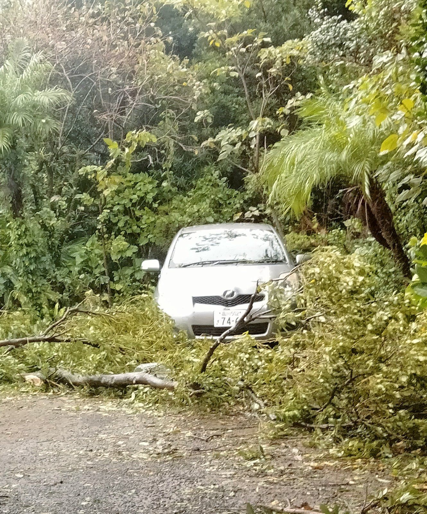

『台風とよけごんと私』 2025年11月15日
『台風とよけごんと私』 2025年11月15日 服部克彦
三根公民館の避難所に身を寄せていた時から写真や動画を撮り
旧Twitterに投稿し続けました。
翌日早朝から車を走らせ 島の様子も投稿しました。
新聞社や報道各局から連絡が入り ほぼすべての放送局と読売新聞や
AP通信にも使ってもらいました。
元々Twitterやインスタグラム、YouTubeでも 島のことを発進していた私は
想像を絶する、とんでもないことが起こっている現在の八丈島を全
三根公民館から底土へ抜け 倉の坂から戻る時
風に取られるハンドルを握りしめて進むうちにとんでもない光景が
「よけごんは？」
とにかく屋根が飛んでいないかどうか？
確認しに行ってみようと思い車を走らせました。

車は折れて飛んできた大小の枝やゴミに埋もれそうになっていまし
どうにか2台の無事を確認 建物も少し屋根のトタンが剥がれかかっていただけで
窓ガラスも割れること無く 奇跡的に無事な姿を見て 思わず 神様！！って 呟きました。
きっと 「空の上にいる よけごんの皆さんたち」 が降りてきて守ってくれたのだと 私は思いました。
暴風と大雨の中 一晩中 みなさんが 必至で手をつなぎ
「みんなのよけごん」 を 守ってくれてありがとうございました。
ありがとう！ みなさん！！ ありがとうございました！！！
※ この記事はアメブロからの移行記事です（原文はこちら）